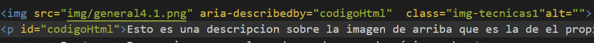

Tecnicas Aria
5 técnicas Aria:
1 Uso de role = status para presentar mensajes de estado.
2 Usar roles de agrupación para identificar controles de formulario relacionados.
El objetivo de esta técnica es marcar un conjunto de controles relacionados dentro de un formulario como puede ser un numero de cuenta o un telefono.
Es necesario ponerle los atributos role='group' y aria-labelledy=
3 Uso de aria-labelledby para proporcionar un nombre para los controles de la interfaz de usuario .
El propósito de esta técnica es proporcionar nombres para los controles de la interfaz de usuario que puedan leerse con tecnología de asistencia. WAI-ARIA proporciona una forma de asociar texto con una sección, dibujo, elemento de formulario, imagen, etc., utilizando la propiedad aria-labellebdy. Asociando un control de interfaz de usuario, como un campo de formulario, con el texto de la página que lo etiqueta.
4. Uso de aria-describedby para proporcionar descripciones de imágenes .
Esto es una descripcion con aria-describedby sobre la imagen de arriba que es la de el propio codigo que uso.
5 Usar aria-label para proporcionar una etiqueta invisible donde no se puede usar una etiqueta visible.
Para los usuarios videntes, el contexto y la apariencia visual de un elemento pueden proporcionar pistas suficientes para determinar el propósito. Un ejemplo es la 'X' que se usa a menudo en la esquina superior derecha de los divs emergentes (cajas de luz) para indicar el control para cerrar el div.